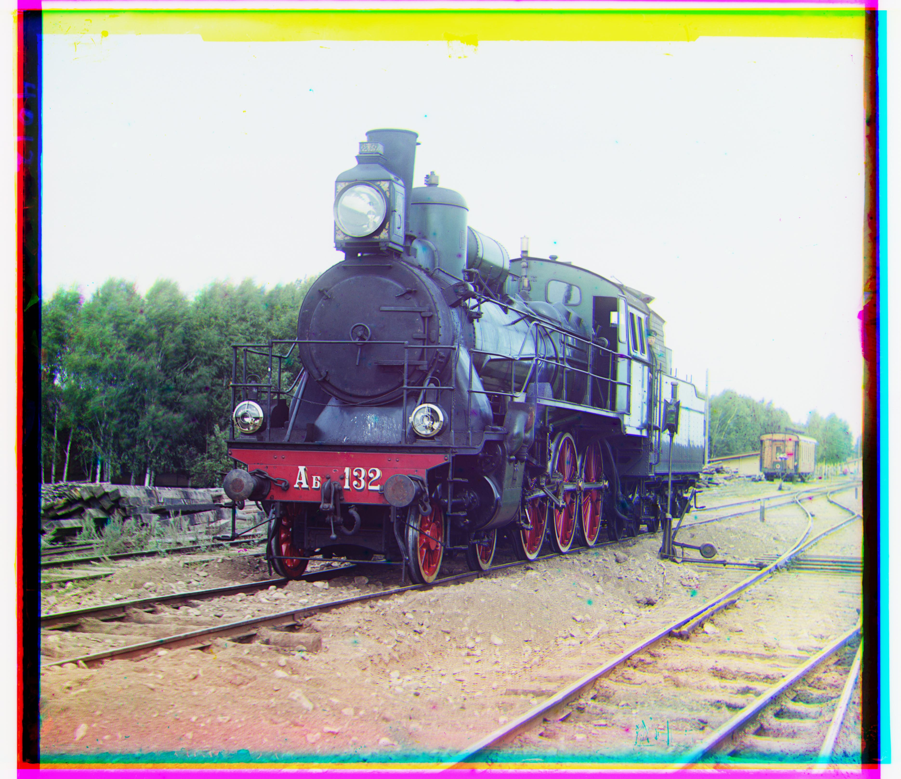
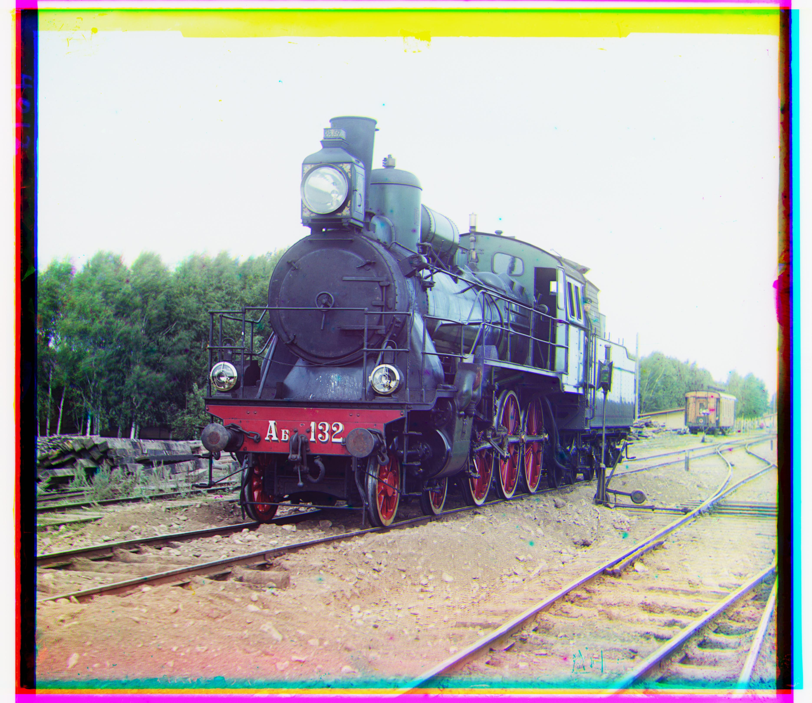
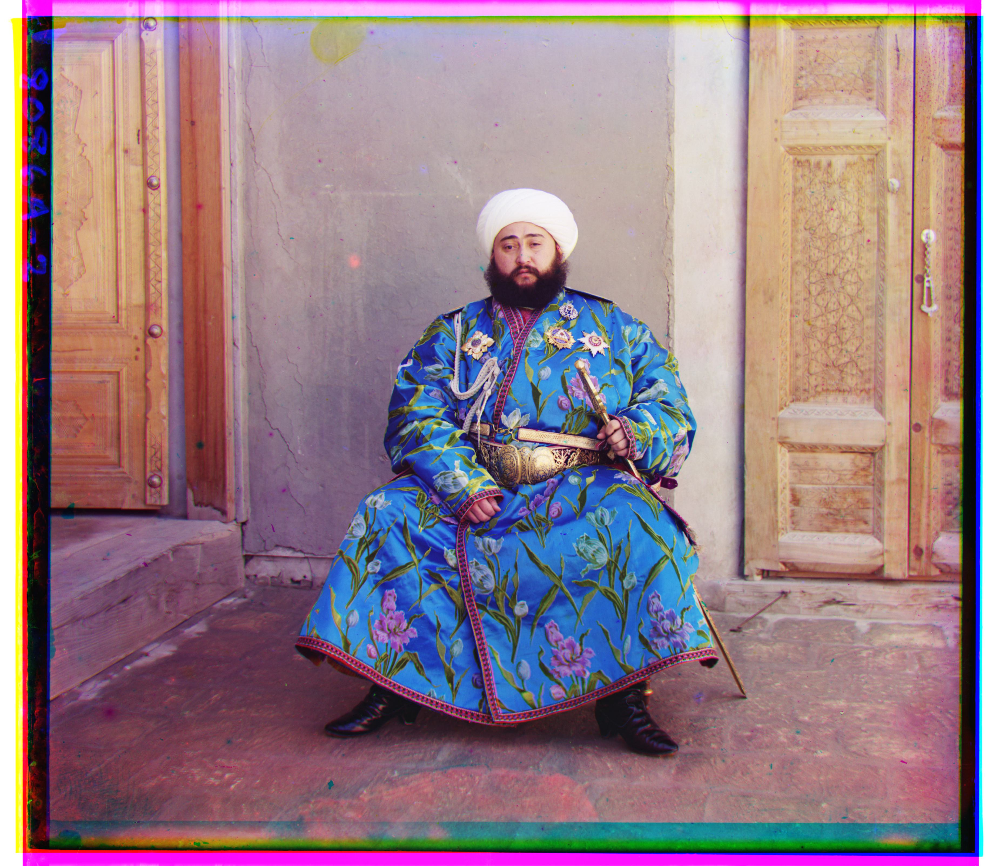
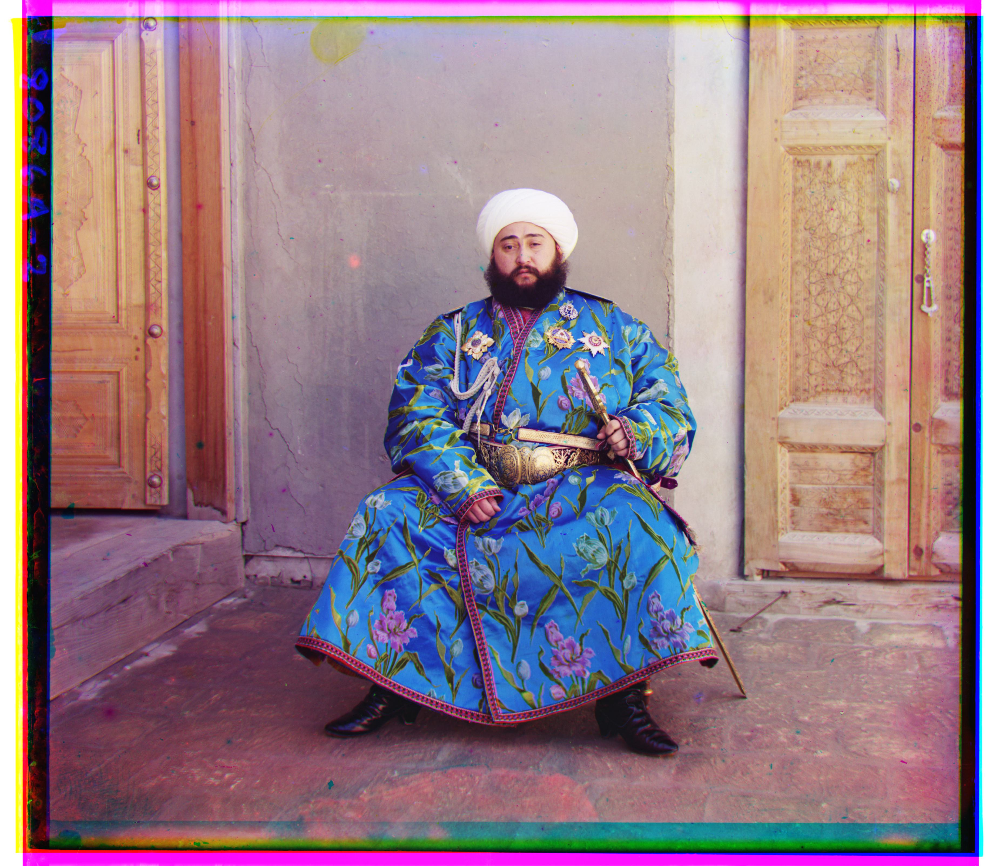

First I implemented exhaustive search for low resolution images. I chose one color as the base layer and attempted to align the other two layers on the base layer one at a time. To align the layer pairs, I first experimented with a naive exhaustive search without any preprocessing. I simply looped over every single shifts in the x and y directions, calculated a metric, and kept the shift that created the optimal metric. I tried both euclidean distance and normalized cross correlation(NCC). For euclidean distance, I kept the shift that generated the lowest distance, whereas for NCC, I kepted the one with the maximum score. This was because a set of similar images would produce a lower distance and a higher correlation. However, this was not enough to successfully align the layers, so I tried to preprocess each image layer. Since NCC performed slightly better than euclidean distance, I used NCC for all images. At first, I only add a sobel edge detector to allow my algorithm to only focus on the macro-features and not color and lighting differences. However, this only improved the alignment by a small margin. After observing the preprocessed images, I discovered that each layer had uneven edges that can dominate and mislead my algorithm. Thus, I cropped each layer 10% of the image height/width in each direction from each side. This update finally properly aligned the image pairs. Using this finalized algorithm, I was able to stack the aligned layers together to produce a visually pleasing colored image.
While the exhaustive search approach could easily handle low resolution images, it failed to process the high resolution (tif) files efficiently. Enters the image pyramid. Here, I implemented a recursive search from the lowest resolution all the way to the highest resolution (halfing the image dimensions each layer), updating the optimal shift while keeping the search window small. The recursive structures starts from the highest resolution. When the recursive calls hit a base case where the size is less than equal to 30 by 30 pixels, the function would find an optimal shift using the exhaustive search function outlined above. After the base layer returns the optimal shift, the layers above will recursively update the optimal shifts within a 30 by 30 window centered at the previous optimal shift. The reason why I used a 30 by 30 window throughout was because I needed to exhaustively search the base case image. Otherwise, the algorithm may not be able to find the optimal shift in the image with the lowest quality. After the recursive stack finishes, the returned value would be the optimal shift for the original image.


 

 
